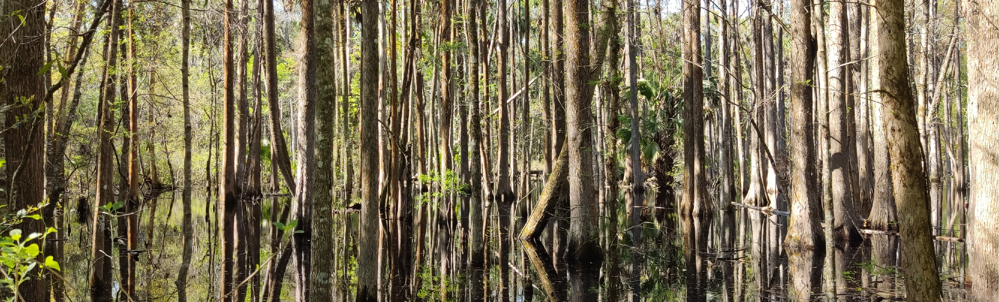

My cover letter
Let me introduce myself in a few words

...
Childhood and high school
I was born in a small city in the north of Spain, Oviedo, which is the capital of a beautiful region called Asturias. When I was very little I wanted to be a scientist, one of those who wore a lab coat, and I also wanted to be a soccer player, one of those who wear soccer boots. My parents (Sandra and Fernando) worked (and work) hard to motivate me in my studies. My grandfather (Abuelito) taught me to read and to be curious, and I almost became a train engineer. My grandmother (Abuelita) also did a great job with me, feeding me most days with custard. During my high school years, I had a biology teacher (Rita) who I believe instilled in me a certain passion for the environment. In my pre-university studies, another teacher (Amor) reinforced these feelings, so I ended up deciding to study the bachelor's degree in Biology at the University of Oviedo.
Undergraduate
My undergraduate career was not easy, and I don't think I was a great student, but I was a persevering one. At the age of 20 I got an ERASMUS scholarship to study for a year at the Nevşehir Üniversitesi, in an interesting mix of Turkish and English. It was a very enriching time for me because it was the first time I lived alone, and also in a totally different environment. I also did an exchange to UNAM in Mexico one year before finishing my degree, where I met amazing people and my current partner, Angela. I did my final degree work analyzing the state of conservation of a dune system on a beach in Asturias in the Partial Natural Reserve of Barayo, as part of the project LIFE+ARCOS
Master's degree in Mexico
I moved to Mexico City together with Angela and we were accepted at UNAM, where I graduated with honors in the Master in Biological Sciences, with focus in Ecology. I was supervised by Dr. Tania Escalante, in the Conservation Biogeography lab. During this stage I developed my taste for field work. I worked in the Iztaccíhuatl-Popocatépetl National Park , where I experienced some mild volcanic eruptions. My species of interest was the zacatuche (Romerolagus diazi), an endangered species threatened by megalopolises and its increasingly restricted distribution. I also participated as field coordinator in expeditions to the Cofre de Perote (Veracruz). I traveled through parts of Michoacan, Chiapas, Oaxaca, Veracruz, Yucatan, State of Mexico, Puebla, Nayarit and Quintana Roo. And during this stage I also traveled to Costa Rica on an incredible trip. In all these trips I greatly enjoyed the culture and gastronomy, and of course, the fauna and flora.
PhD in USA
And now I am here.